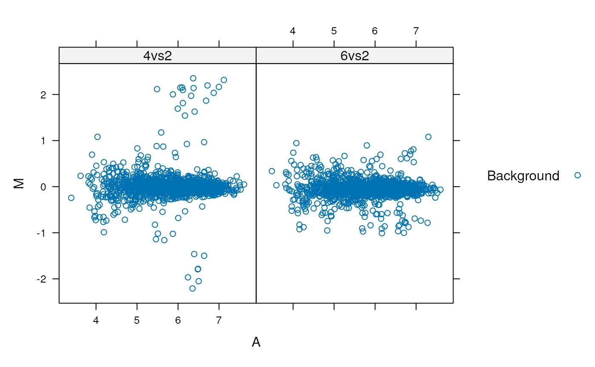
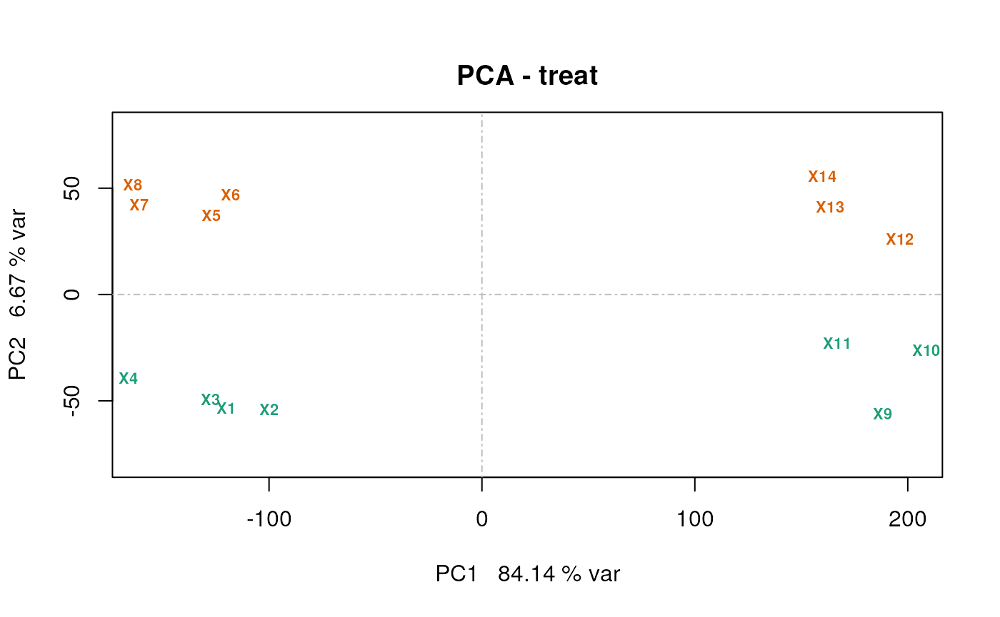
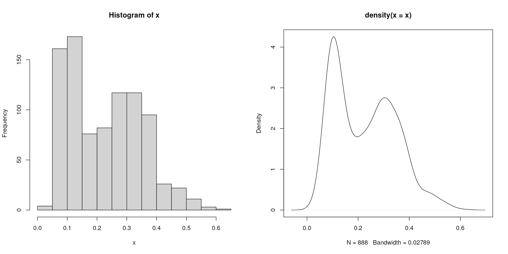
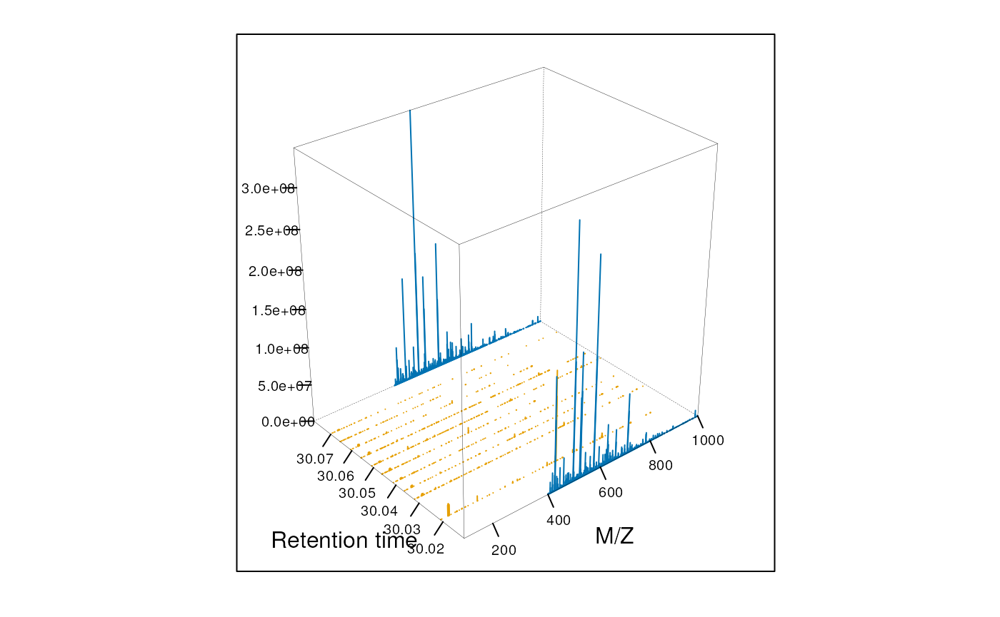
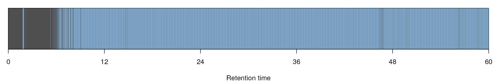
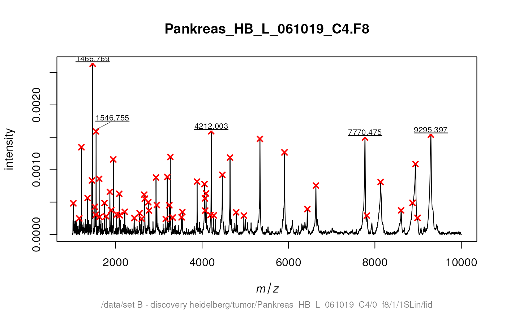
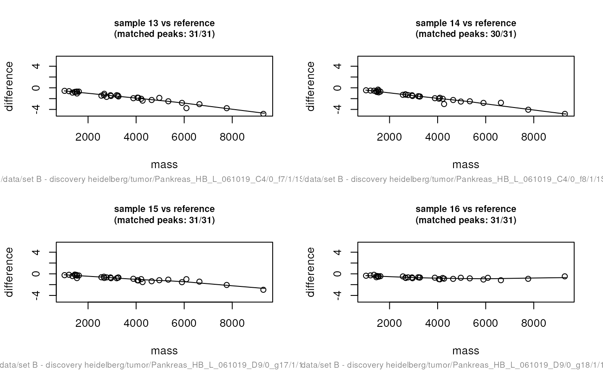

Visualisation of proteomics data using R and Bioconductor
Laurent Gatto
Lisa Breckels
Sebastian Gibb
RProtVis.RmdAbstract
This is the companion vignette to the ‘Using R and Bioconductor for proteomics data analysis’ manuscript that presents an overview of R and Bioconductor software for mass spectrometry and proteomics data. It provides the code to reproduce the figures in the paper.
Introduction
This vignette illustrates existing and Bioconductor infrastructure for the visualisation of mass spectrometry and proteomics data. The code details the visualisations presented in
Gatto L, Breckels LM, Naake T, Gibb S. Visualisation of proteomics data using R and Bioconductor. Proteomics. 2015 Feb 18. doi: 10.1002/pmic.201400392. PubMed PMID: 25690415.
References
- CRAN Task View: Graphic Displays & Dynamic Graphics & Graphic Devices & Visualization: http://cran.r-project.org/web/views/Graphics.html
- CRAN Task View: Web Technologies and Services: http://cran.r-project.org/web/views/WebTechnologies.html
- ggplot2 book (syntax is slightly outdated) (code), web page and on-line docs
- lattice book and web page
- R Graphics book
- R Cookbook and R Graphics Cookbook
Relevant packages
There are currently 156 Proteomics and 113 MassSpectrometry packages in Bioconductor version 3.14. Other non-Bioconductor packages are described in the r Biocexptpkg("RforProteomics") vignette (open it in R with RforProteomics() or read it online.)
Ascombe’s quartet
| x1 | x2 | x3 | x4 | y1 | y2 | y3 | y4 |
|---|---|---|---|---|---|---|---|
| 10 | 10 | 10 | 8 | 8.04 | 9.14 | 7.46 | 6.58 |
| 8 | 8 | 8 | 8 | 6.95 | 8.14 | 6.77 | 5.76 |
| 13 | 13 | 13 | 8 | 7.58 | 8.74 | 12.74 | 7.71 |
| 9 | 9 | 9 | 8 | 8.81 | 8.77 | 7.11 | 8.84 |
| 11 | 11 | 11 | 8 | 8.33 | 9.26 | 7.81 | 8.47 |
| 14 | 14 | 14 | 8 | 9.96 | 8.10 | 8.84 | 7.04 |
| 6 | 6 | 6 | 8 | 7.24 | 6.13 | 6.08 | 5.25 |
| 4 | 4 | 4 | 19 | 4.26 | 3.10 | 5.39 | 12.50 |
| 12 | 12 | 12 | 8 | 10.84 | 9.13 | 8.15 | 5.56 |
| 7 | 7 | 7 | 8 | 4.82 | 7.26 | 6.42 | 7.91 |
| 5 | 5 | 5 | 8 | 5.68 | 4.74 | 5.73 | 6.89 |
tab <- matrix(NA, 5, 4)
colnames(tab) <- 1:4
rownames(tab) <- c("var(x)", "mean(x)",
"var(y)", "mean(y)",
"cor(x,y)")
for (i in 1:4)
tab[, i] <- c(var(anscombe[, i]),
mean(anscombe[, i]),
var(anscombe[, i+4]),
mean(anscombe[, i+4]),
cor(anscombe[, i], anscombe[, i+4]))| 1 | 2 | 3 | 4 | |
|---|---|---|---|---|
| var(x) | 11.0000000 | 11.0000000 | 11.0000000 | 11.0000000 |
| mean(x) | 9.0000000 | 9.0000000 | 9.0000000 | 9.0000000 |
| var(y) | 4.1272691 | 4.1276291 | 4.1226200 | 4.1232491 |
| mean(y) | 7.5009091 | 7.5009091 | 7.5000000 | 7.5009091 |
| cor(x,y) | 0.8164205 | 0.8162365 | 0.8162867 | 0.8165214 |
While the residuals of the linear regression clearly indicate fundamental differences in these data, the most simple and straightforward approach is visualisation to highlight the fundamental differences in the datasets.
ff <- y ~ x
mods <- setNames(as.list(1:4), paste0("lm", 1:4))
par(mfrow = c(2, 2), mar = c(4, 4, 1, 1))
for (i in 1:4) {
ff[2:3] <- lapply(paste0(c("y","x"), i), as.name)
plot(ff, data = anscombe, pch = 19, xlim = c(3, 19), ylim = c(3, 13))
mods[[i]] <- lm(ff, data = anscombe)
abline(mods[[i]])
}
| lm1 | lm2 | lm3 | lm4 |
|---|---|---|---|
| 0.0390000 | 1.1390909 | -0.5397273 | -0.421 |
| -0.0508182 | 1.1390909 | -0.2302727 | -1.241 |
| -1.9212727 | -0.7609091 | 3.2410909 | 0.709 |
| 1.3090909 | 1.2690909 | -0.3900000 | 1.839 |
| -0.1710909 | 0.7590909 | -0.6894545 | 1.469 |
| -0.0413636 | -1.9009091 | -1.1586364 | 0.039 |
| 1.2393636 | 0.1290909 | 0.0791818 | -1.751 |
| -0.7404545 | -1.9009091 | 0.3886364 | 0.000 |
| 1.8388182 | 0.1290909 | -0.8491818 | -1.441 |
| -1.6807273 | 0.7590909 | -0.0805455 | 0.909 |
| 0.1794545 | -0.7609091 | 0.2289091 | -0.111 |
The MA plot example
The following code chunk connects to the PXD000001 data set on the ProteomeXchange repository and fetches the mzTab file. After missing values filtering, we extract relevant data (log2 fold-changes and log10 mean expression intensities) into data.frames.
## Loading PXD000001 from cache.
mztab <- pxget(px1, "F063721.dat-mztab.txt")## Loading F063721.dat-mztab.txt from cache.
library("MSnbase")
## here, we need to specify the (old) mzTab version 0.9
qnt <- readMzTabData(mztab, what = "PEP", version = "0.9")
sampleNames(qnt) <- reporterNames(TMT6)
qnt <- filterNA(qnt)
## may be combineFeatuers
spikes <- c("P02769", "P00924", "P62894", "P00489")
protclasses <- as.character(fData(qnt)$accession)
protclasses[!protclasses %in% spikes] <- "Background"
madata42 <- data.frame(A = rowMeans(log(exprs(qnt[, c(4, 2)]), 10)),
M = log(exprs(qnt)[, 4], 2) - log(exprs(qnt)[, 2], 2),
data = rep("4vs2", nrow(qnt)),
protein = fData(qnt)$accession,
class = factor(protclasses))
madata62 <- data.frame(A = rowMeans(log(exprs(qnt[, c(6, 2)]), 10)),
M = log(exprs(qnt)[, 6], 2) - log(exprs(qnt)[, 2], 2),
data = rep("6vs2", nrow(qnt)),
protein = fData(qnt)$accession,
class = factor(protclasses))
madata <- rbind(madata42, madata62)The traditional plotting system
par(mfrow = c(1, 2))
plot(M ~ A, data = madata42, main = "4vs2",
xlab = "A", ylab = "M", col = madata62$class)
plot(M ~ A, data = madata62, main = "6vs2",
xlab = "A", ylab = "M", col = madata62$class)
lattice
library("lattice")
latma <- xyplot(M ~ A | data, data = madata,
groups = madata$class,
auto.key = TRUE)
print(latma)
ggplot2
library("ggplot2")
ggma <- ggplot(aes(x = A, y = M, colour = class), data = madata,
colour = class) +
geom_point() +
facet_grid(. ~ data)
print(ggma)
Customization
library("RColorBrewer")
bcols <- brewer.pal(4, "Set1")
cls <- c("Background" = "#12121230",
"P02769" = bcols[1],
"P00924" = bcols[2],
"P62894" = bcols[3],
"P00489" = bcols[4])
ggma2 <- ggplot(aes(x = A, y = M, colour = class),
data = madata) + geom_point(shape = 19) +
facet_grid(. ~ data) + scale_colour_manual(values = cls) +
guides(colour = guide_legend(override.aes = list(alpha = 1)))
print(ggma2)
The MAplot method for MSnSet instances
MAplot(qnt, cex = .8)
An interactive shiny app for MA plots
This (now outdated and deprecated) app is based on Mike Love’s shinyMA application, adapted for a proteomics data. A screen shot is displayed below.

shinyMA screeshot
See the excellent shiny web page for tutorials and the Mastering Shiny book for details on shiny.
Volcano plots
Below, using the msmsTest package, we load a example MSnSet data with spectral couting data (from the r Biocpkg("msmsEDA") package) and run a statistical test to obtain (adjusted) p-values and fold-changes.
library("msmsEDA")
library("msmsTests")
data(msms.dataset)
## Pre-process expression matrix
e <- pp.msms.data(msms.dataset)
## Models and normalizing condition
null.f <- "y~batch"
alt.f <- "y~treat+batch"
div <- apply(exprs(e), 2, sum)
## Test
res <- msms.glm.qlll(e, alt.f, null.f, div = div)
lst <- test.results(res, e, pData(e)$treat, "U600", "U200 ", div,
alpha = 0.05, minSpC = 2, minLFC = log2(1.8),
method = "BH")Here, we produce the volcano plot by hand, with the plot function. In the second plot, we limit the x axis limits and add grid lines.
Below, we use the res.volcanoplot function from the r Biocpkg("msmsTests") package. This functions uses the sample annotation stored with the quantitative data in the MSnSet object to colour the samples according to their phenotypes.
## Plot
res.volcanoplot(lst$tres,
max.pval = 0.05,
min.LFC = 1,
maxx = 3,
maxy = NULL,
ylbls = 4)
A PCA plot
Using the counts.pca function from the msmsEDA package:
library("msmsEDA")
data(msms.dataset)
msnset <- pp.msms.data(msms.dataset)
lst <- counts.pca(msnset, wait = FALSE)
It is also possible to generate the PCA data using the prcomp. Below, we extract the coordinates of PC1 and PC2 from the counts.pca result and plot them using the plot function.
pcadata <- lst$pca$x[, 1:2]
head(pcadata)## PC1 PC2
## U2.2502.1 -120.26080 -53.55270
## U2.2502.2 -99.90618 -53.89979
## U2.2502.3 -127.35928 -49.29906
## U2.2502.4 -166.04611 -39.27557
## U6.2502.1 -127.18423 37.11614
## U6.2502.2 -117.97016 47.03702
Plotting with R
kable(plotfuns)| plot type | traditional | lattice | ggplot2 |
|---|---|---|---|
| scatterplots | plot | xyplot | geom_point |
| histograms | hist | histgram | geom_histogram |
| density plots | plot(density()) | densityplot | geom_density |
| boxplots | boxplot | bwplot | geom_boxplot |
| violin plots | vioplot::vioplot | bwplot(…, panel = panel.violin) | geom_violin |
| line plots | plot, matplot | xyploy, parallelplot | geom_line |
| bar plots | barplot | barchart | geom_bar |
| pie charts | pie | geom_bar with polar coordinates | |
| dot plots | dotchart | dotplot | geom_point |
| stip plots | stripchart | stripplot | goem_point |
| dendrogramms | plot(hclust()) | latticeExtra package | ggdendro package |
| heatmaps | image, heatmap | levelplot | geom_tile |
Below, we are going to use a data from the pRolocdata to illustrate the plotting functions.
library("pRolocdata")
data(tan2009r1)Scatter plots
See the MA and volcano plot examples.
The default plot type is p, for points. Other important types are l for lines and h for histogram (see below).
Historams and density plots
We extract the (normalised) intensities of the first sample
x <- exprs(tan2009r1)[, 1]and plot the distribution with a histogram and a density plot next to each other on the same figure (using the mfrow par plotting paramter)

Box plots and violin plots
we first extract the 888 proteins by r ncol(tan2009r1) samples data matrix and plot the sample distributions next to each other using boxplot and beanplot (from the beanplot package).
library("beanplot")
x <- exprs(tan2009r1)
par(mfrow = c(2, 1))
boxplot(x)
beanplot(x[, 1], x[, 2], x[, 3], x[, 4], log = "")
Line plots
below, we produce line plots that describe the protein quantitative profiles for two sets of proteins, namely er and mitochondrial proteins using matplot.
we need to transpose the matrix (with t) and set the type to both (b), to display points and lines, the colours to red and steel blue, the point characters to 1 (an empty point) and the line type to 1 (a solid line).
er <- fData(tan2009r1)$markers == "ER"
mt <- fData(tan2009r1)$markers == "mitochondrion"
par(mfrow = c(2, 1))
matplot(t(x[er, ]), type = "b", col = "red", pch = 1, lty = 1)
matplot(t(x[mt, ]), type = "b", col = "steelblue", pch = 1, lty = 1)
In the last section, about spatial proteomics, we use the specialised plotDist function from the pRoloc package to generate such figures.
Bar and dot charts
To illustrate bar and dot charts, we cound the number of proteins in the respective class using table.
##
## Cytoskeleton ER Golgi Lysosome mitochondrion
## 7 28 13 8 29
## Nucleus Peroxisome PM Proteasome Ribosome 40S
## 21 4 34 15 20
## Ribosome 60S unknown
## 32 677
par(mfrow = c(1, 2))
barplot(x)
dotchart(as.numeric(x))Heatmaps
The easiest to produce a complete heatmap is with the heatmap function:

To produce the a heatmap without the dendrograms, one can use the image function on a matrix or the specialised version for MSnSet objects from the MSnbase package.
See also gplots’s heatmap.2 function and the Heatplus Bioconductor package for more advanced heatmaps and the corrplot package for correlation matrices.
Dendrograms
The easiest way to produce and plot a dendrogram is:
d <- dist(t(exprs(tan2009r1))) ## distance between samples
hc <- hclust(d) ## hierarchical clustering
plot(hc) ## visualisation
See also dendextend and this post to illustrate latticeExtra and ggdendro.
Venn diagrams
- The limma package.
- The VennDiagram package.
Visualising mass spectrometry data
Direct access to the raw data
library("mzR")
mzf <- pxget(px1,
"TMT_Erwinia_1uLSike_Top10HCD_isol2_45stepped_60min_01-20141210.mzML")## Loading TMT_Erwinia_1uLSike_Top10HCD_isol2_45stepped_60min_01-20141210.mzML from cache.
ms <- openMSfile(mzf)
hd <- header(ms)
ms1 <- which(hd$msLevel == 1)
rtsel <- hd$retentionTime[ms1] / 60 > 30 & hd$retentionTime[ms1] / 60 < 35
library("MSnbase")
(M <- MSmap(ms, ms1[rtsel], 521, 523, .005, hd))## Object of class "MSmap"
## Map [75, 401]
## [1] Retention time: 30:01 - 34:58
## [2] M/Z: 521 - 523 (res 0.005)
library("lattice")
ff <- colorRampPalette(c("yellow", "steelblue"))
trellis.par.set(regions=list(col=ff(100)))
plot(M, aspect = 1, allTicks = FALSE)

To produce a version that can be reoriented interactively on the screen discplay, use the rgl
lout <- matrix(NA, ncol = 10, nrow = 8)
lout[1:2, ] <- 1
for (ii in 3:4)
lout[ii, ] <- c(2, 2, 2, 2, 2, 2, 3, 3, 3, 3)
lout[5, ] <- rep(4:8, each = 2)
lout[6, ] <- rep(4:8, each = 2)
lout[7, ] <- rep(9:13, each = 2)
lout[8, ] <- rep(9:13, each = 2)
layout(lout)
par(mar=c(4,2,1,1))
plot(chromatogram(ms)[[1]], type = "l")
abline(v = hd[i, "retentionTime"], col = "red")
par(mar = c(3, 2, 1, 0))
plot(peaks(ms, i), type = "l", xlim = c(400, 1000))
legend("topright", bty = "n",
legend = paste0(
"Acquisition ", hd[i, "acquisitionNum"], "\n",
"Retention time ", formatRt(hd[i, "retentionTime"])))
abline(h = 0)
abline(v = hd[ms2, "precursorMZ"],
col = c("#FF000080",
rep("#12121280", 9)))
par(mar = c(3, 0.5, 1, 1))
plot(peaks(ms, i), type = "l", xlim = c(521, 522.5), yaxt = "n")
abline(h = 0)
abline(v = hd[ms2, "precursorMZ"], col = "#FF000080")
par(mar = c(2, 2, 0, 1))
for (ii in ms2) {
p <- peaks(ms, ii)
plot(p, xlab = "", ylab = "", type = "h", cex.axis = .6)
legend("topright",
legend = paste0("Prec M/Z\n", round(hd[ii, "precursorMZ"], 2)),
bty = "n", cex = .8)
}Accesing and plotting MS data.

MS barcoding
par(mar=c(4,1,1,1))
image(t(matrix(hd$msLevel, 1, nrow(hd))),
xlab="Retention time",
xaxt="n", yaxt="n", col=c("black","steelblue"))
k <- round(range(hd$retentionTime) / 60)
nk <- 5
axis(side=1, at=seq(0,1,1/nk), labels=seq(k[1],k[2],k[2]/nk))
Animation
The following animation scrolls over 5 minutes of retention time for a MZ range between 521 and 523.
library("animation")
an1 <- function() {
for (i in seq(0, 5, 0.2)) {
rtsel <- hd$retentionTime[ms1] / 60 > (30 + i) &
hd$retentionTime[ms1] / 60 < (35 + i)
M <- MSmap(ms, ms1[rtsel], 521, 523, .005, hd)
M@map[msMap(M) == 0] <- NA
print(plot3D(M, rgl = FALSE))
}
}
saveGIF(an1(), movie.name = "msanim1.gif")
MS animation 1
The code chunk below scrolls of a slice of retention times while keeping the retention time constant between 30 and 35 minutes.
an2 <- function() {
for (i in seq(0, 2.5, 0.1)) {
rtsel <- hd$retentionTime[ms1] / 60 > 30 & hd$retentionTime[ms1] / 60 < 35
mz1 <- 520 + i
mz2 <- 522 + i
M <- MSmap(ms, ms1[rtsel], mz1, mz2, .005, hd)
M@map[msMap(M) == 0] <- NA
print(plot3D(M, rgl = FALSE))
}
}
saveGIF(an2(), movie.name = "msanim2.gif")
MS animation 2
The MSnbase infrastructure
library("MSnbase")
data(itraqdata)
itraqdata2 <- pickPeaks(itraqdata, verbose = FALSE)
plot(itraqdata[[25]], full = TRUE, reporters = iTRAQ4)
par(oma = c(0, 0, 0, 0))
par(mar = c(4, 4, 1, 1))
plot(itraqdata2[[25]], itraqdata2[[28]], sequences = rep("IMIDLDGTENK", 2))
The protViz package
library("protViz")
data(msms)
fi <- fragmentIon("TAFDEAIAELDTLNEESYK")
fi.cyz <- as.data.frame(cbind(c=fi[[1]]$c, y=fi[[1]]$y, z=fi[[1]]$z))
p <- peakplot("TAFDEAIAELDTLNEESYK",
spec = msms[[1]],
fi = fi.cyz,
itol = 0.6,
ion.axes = FALSE)
The peakplot function return the annotation of the MSMS spectrum that is plotted:
str(p)## List of 7
## $ mZ.Da.error : num [1:57] 215.3 144.27 -2.8 -17.06 2.03 ...
## $ mZ.ppm.error: num [1:57] 1808046 758830 -8306 -37724 3501 ...
## $ idx : int [1:57] 1 1 1 3 16 24 41 52 67 88 ...
## $ label : chr [1:57] "c1" "c2" "c3" "c4" ...
## $ score : num -1
## $ sequence : chr "TAFDEAIAELDTLNEESYK"
## $ fragmentIon :'data.frame': 19 obs. of 3 variables:
## ..$ c: num [1:19] 119 190 337 452 581 ...
## ..$ y: num [1:19] 147 310 397 526 655 ...
## ..$ z: num [1:19] 130 293 380 509 638 ...Preprocessing of MALDI-MS spectra
The following code chunks demonstrate the usage of the mass spectrometry preprocessing and plotting routines in the r CRANpkg("MALDIquant") package. MALDIquant uses the traditional graphics system. Therefore MALDIquant overloads the traditional functions plot, lines and points for its own data types. These data types represents spectrum and peak lists as S4 classes. Please see the MALDIquant vignette and the corresponding website for more details.
After loading some example data a simple plot draws the raw spectrum.
library("MALDIquant")
data("fiedler2009subset", package="MALDIquant")
plot(fiedler2009subset[[14]])After some preprocessing, namely variance stabilization and smoothing, we use lines to draw our baseline estimate in our processed spectrum.
transformedSpectra <- transformIntensity(fiedler2009subset, method = "sqrt")
smoothedSpectra <- smoothIntensity(transformedSpectra, method = "SavitzkyGolay")
plot(smoothedSpectra[[14]])
lines(estimateBaseline(smoothedSpectra[[14]]), lwd = 2, col = "red")
After removing the background removal we could use plot again to draw our baseline corrected spectrum.
rbSpectra <- removeBaseline(smoothedSpectra)
plot(rbSpectra[[14]])
detectPeaks returns a MassPeaks object that offers the same traditional graphics functions. The next code chunk demonstrates how to mark the detected peaks in a spectrum.
cbSpectra <- calibrateIntensity(rbSpectra, method = "TIC")
peaks <- detectPeaks(cbSpectra, SNR = 5)
plot(cbSpectra[[14]])
points(peaks[[14]], col = "red", pch = 4, lwd = 2)Additional there is a special function labelPeaks that allows to draw the M/Z values above the corresponding peaks. Next we mark the 5 top peaks in the spectrum.
top5 <- intensity(peaks[[14]]) %in% sort(intensity(peaks[[14]]),
decreasing = TRUE)[1:5]
labelPeaks(peaks[[14]], index = top5, avoidOverlap = TRUE)
Often multiple spectra have to be recalibrated to be comparable. Therefore MALDIquant warps the spectra according to so called reference or landmark peaks. For debugging the determineWarpingFunctions function offers some warping plots. Here we show only the last 4 plots:
par(mfrow = c(2, 2))
warpingFunctions <-
determineWarpingFunctions(peaks,
tolerance = 0.001,
plot = TRUE,
plotInteractive = TRUE)
par(mfrow = c(1, 1))
warpedSpectra <- warpMassSpectra(cbSpectra, warpingFunctions)
warpedPeaks <- warpMassPeaks(peaks, warpingFunctions)In the next code chunk we visualise the need and the effect of the recalibration.
sel <- c(2, 10, 14, 16)
xlim <- c(4180, 4240)
ylim <- c(0, 1.9e-3)
lty <- c(1, 4, 2, 6)
par(mfrow = c(1, 2))
plot(cbSpectra[[1]], xlim = xlim, ylim = ylim, type = "n")
for (i in seq(along = sel)) {
lines(peaks[[sel[i]]], lty = lty[i], col = i)
lines(cbSpectra[[sel[i]]], lty = lty[i], col = i)
}
plot(cbSpectra[[1]], xlim = xlim, ylim = ylim, type = "n")
for (i in seq(along = sel)) {
lines(warpedPeaks[[sel[i]]], lty = lty[i], col = i)
lines(warpedSpectra[[sel[i]]], lty = lty[i], col = i)
}
The code chunks above generate plots that are very similar to the figure 7 in the corresponding paper “Visualisation of proteomics data using R”. Please find the code to exactly reproduce the figure at: https://github.com/sgibb/MALDIquantExamples/blob/master/R/createFigure1_color.R
Genomic and protein sequences
These visualisations originate from the Pbase Pbase-data and mapping vignettes.
Mass spectrometry imaging
The following code chunk downloads a MALDI imaging dataset from a mouse kidney shared by Adrien Nyakas and Stefan Schurch and generates a plot with the mean spectrum and three slices of interesting M/Z regions.
library("MALDIquant")
library("MALDIquantForeign")
spectra <- importBrukerFlex("http://files.figshare.com/1106682/MouseKidney_IMS_testdata.zip", verbose = FALSE)
spectra <- smoothIntensity(spectra, "SavitzkyGolay", halfWindowSize = 8)
spectra <- removeBaseline(spectra, method = "TopHat", halfWindowSize = 16)
spectra <- calibrateIntensity(spectra, method = "TIC")
avgSpectrum <- averageMassSpectra(spectra)
avgPeaks <- detectPeaks(avgSpectrum, SNR = 5)
avgPeaks <- avgPeaks[intensity(avgPeaks) > 0.0015]
oldPar <- par(no.readonly = TRUE)
layout(matrix(c(1,1,1,2,3,4), nrow = 2, byrow = TRUE))
plot(avgSpectrum, main = "mean spectrum",
xlim = c(3000, 6000), ylim = c(0, 0.007))
lines(avgPeaks, col = "red")
labelPeaks(avgPeaks, cex = 1)
par(mar = c(0.5, 0.5, 1.5, 0.5))
plotMsiSlice(spectra,
center = mass(avgPeaks),
tolerance = 1,
plotInteractive = TRUE)
par(oldPar) )]
)]
An interactive shiny app for Imaging mass spectrometry
There is also an interactive MALDIquant IMS shiny app for demonstration purposes. A screen shot is displayed below. To start the application:

ims-shiny screeshot
Spatial proteomics
library("pRoloc")
library("pRolocdata")
data(tan2009r1)
## these params use class weights
fn <- dir(system.file("extdata", package = "pRoloc"),
full.names = TRUE, pattern = "params2.rda")
load(fn)
setStockcol(NULL)
setStockcol(paste0(getStockcol(), 90))
w <- table(fData(tan2009r1)[, "pd.markers"])
(w <- 1/w[names(w) != "unknown"])##
## Cytoskeleton ER Golgi Lysosome mitochondrion
## 0.14285714 0.05000000 0.16666667 0.12500000 0.07142857
## Nucleus Peroxisome PM Proteasome Ribosome 40S
## 0.05000000 0.25000000 0.06666667 0.09090909 0.07142857
## Ribosome 60S
## 0.04000000
tan2009r1 <- svmClassification(tan2009r1, params2,
class.weights = w,
fcol = "pd.markers")## Registered S3 method overwritten by 'gdata':
## method from
## reorder.factor gplots
lout <- matrix(c(1:4, rep(5, 4)), ncol = 4, nrow = 2)
layout(lout)
cls <- getStockcol()
par(mar = c(4, 4, 1, 1))
plotDist(tan2009r1[which(fData(tan2009r1)$PLSDA == "mitochondrion"), ],
markers = featureNames(tan2009r1)[which(fData(tan2009r1)$markers.orig == "mitochondrion")],
mcol = cls[5])
legend("topright", legend = "mitochondrion", bty = "n")
plotDist(tan2009r1[which(fData(tan2009r1)$PLSDA == "ER/Golgi"), ],
markers = featureNames(tan2009r1)[which(fData(tan2009r1)$markers.orig == "ER")],
mcol = cls[2])
legend("topright", legend = "ER", bty = "n")
plotDist(tan2009r1[which(fData(tan2009r1)$PLSDA == "ER/Golgi"), ],
markers = featureNames(tan2009r1)[which(fData(tan2009r1)$markers.orig == "Golgi")],
mcol = cls[3])
legend("topright", legend = "Golgi", bty = "n")
plotDist(tan2009r1[which(fData(tan2009r1)$PLSDA == "PM"), ],
markers = featureNames(tan2009r1)[which(fData(tan2009r1)$markers.orig == "PM")],
mcol = cls[8])
legend("topright", legend = "PM", bty = "n")
plot2D(tan2009r1, fcol = "svm", cex = ptsze, method = "kpca")
addLegend(tan2009r1, where = "bottomleft", fcol = "svm", bty = "n")See the pRoloc-tutorial vignette (pdf) from the pRoloc package for details about spatial proteomics data analysis and visualisation.
Session information
print(sessionInfo(), locale = FALSE)## R version 4.1.0 (2021-05-18)
## Platform: x86_64-pc-linux-gnu (64-bit)
## Running under: Ubuntu 20.04.3 LTS
##
## Matrix products: default
## BLAS/LAPACK: /usr/lib/x86_64-linux-gnu/openblas-pthread/libopenblasp-r0.3.8.so
##
## attached base packages:
## [1] stats4 stats graphics grDevices utils datasets methods
## [8] base
##
## other attached packages:
## [1] beanplot_1.2 ggplot2_3.3.5 lattice_0.20-44
## [4] e1071_1.7-8 msmsTests_1.31.0 msmsEDA_1.31.0
## [7] pRolocdata_1.31.0 pRoloc_1.33.0 BiocParallel_1.27.3
## [10] MLInterfaces_1.73.0 cluster_2.1.2 annotate_1.71.0
## [13] XML_3.99-0.6 AnnotationDbi_1.55.1 IRanges_2.27.2
## [16] MALDIquantForeign_0.12 MALDIquant_1.20 RColorBrewer_1.1-2
## [19] xtable_1.8-4 rpx_2.1.9 knitr_1.33
## [22] DT_0.18 protViz_0.6.8 BiocManager_1.30.16
## [25] RforProteomics_1.31.1 MSnbase_2.19.1 ProtGenerics_1.25.1
## [28] S4Vectors_0.31.1 mzR_2.27.1 Rcpp_1.0.7
## [31] Biobase_2.53.0 BiocGenerics_0.39.2 BiocStyle_2.21.3
##
## loaded via a namespace (and not attached):
## [1] utf8_1.2.2 R.utils_2.10.1 RUnit_0.4.32
## [4] tidyselect_1.1.1 RSQLite_2.2.7 htmlwidgets_1.5.3
## [7] grid_4.1.0 lpSolve_5.6.15 pROC_1.17.0.1
## [10] munsell_0.5.0 codetools_0.2-18 ragg_1.1.3
## [13] preprocessCore_1.55.2 withr_2.4.2 colorspace_2.0-2
## [16] filelock_1.0.2 highr_0.9 mzID_1.31.0
## [19] labeling_0.4.2 GenomeInfoDbData_1.2.6 farver_2.1.0
## [22] bit64_4.0.5 rprojroot_2.0.2 coda_0.19-4
## [25] vctrs_0.3.8 generics_0.1.0 ipred_0.9-11
## [28] xfun_0.25 BiocFileCache_2.1.1 randomForest_4.6-14
## [31] R6_2.5.0 doParallel_1.0.16 GenomeInfoDb_1.29.3
## [34] clue_0.3-59 locfit_1.5-9.4 MsCoreUtils_1.5.0
## [37] bitops_1.0-7 cachem_1.0.5 assertthat_0.2.1
## [40] scales_1.1.1 nnet_7.3-16 gtable_0.3.0
## [43] affy_1.71.0 biocViews_1.61.1 timeDate_3043.102
## [46] rlang_0.4.11 systemfonts_1.0.2 splines_4.1.0
## [49] ModelMetrics_1.2.2.2 impute_1.67.0 hexbin_1.28.2
## [52] yaml_2.2.1 reshape2_1.4.4 crosstalk_1.1.1
## [55] qvalue_2.25.0 RBGL_1.69.0 caret_6.0-88
## [58] tools_4.1.0 lava_1.6.9 bookdown_0.22
## [61] gplots_3.1.1 affyio_1.63.1 ellipsis_0.3.2
## [64] readBrukerFlexData_1.8.5 jquerylib_0.1.4 proxy_0.4-26
## [67] plyr_1.8.6 base64enc_0.1-3 progress_1.2.2
## [70] zlibbioc_1.39.0 purrr_0.3.4 RCurl_1.98-1.3
## [73] prettyunits_1.1.1 rpart_4.1-15 viridis_0.6.1
## [76] sampling_2.9 LaplacesDemon_16.1.6 fs_1.5.0
## [79] magrittr_2.0.1 data.table_1.14.0 pcaMethods_1.85.0
## [82] mvtnorm_1.1-2 hms_1.1.0 evaluate_0.14
## [85] mclust_5.4.7 gridExtra_2.3 compiler_4.1.0
## [88] biomaRt_2.49.4 tibble_3.1.3 KernSmooth_2.23-20
## [91] ncdf4_1.17 crayon_1.4.1 R.oo_1.24.0
## [94] htmltools_0.5.1.1 segmented_1.3-4 lubridate_1.7.10
## [97] DBI_1.1.1 dbplyr_2.1.1 MASS_7.3-54
## [100] rappdirs_0.3.3 Matrix_1.3-4 vsn_3.61.2
## [103] gdata_2.18.0 R.methodsS3_1.8.1 parallel_4.1.0
## [106] gower_0.2.2 pkgconfig_2.0.3 pkgdown_1.6.1.9001
## [109] readMzXmlData_2.8.1 recipes_0.1.16 xml2_1.3.2
## [112] foreach_1.5.1 bslib_0.2.5.1 XVector_0.33.0
## [115] prodlim_2019.11.13 stringr_1.4.0 digest_0.6.27
## [118] graph_1.71.2 Biostrings_2.61.2 rmarkdown_2.10
## [121] edgeR_3.35.0 dendextend_1.15.1 curl_4.3.2
## [124] kernlab_0.9-29 gtools_3.9.2 lifecycle_1.0.0
## [127] nlme_3.1-152 jsonlite_1.7.2 desc_1.3.0
## [130] viridisLite_0.4.0 limma_3.49.4 fansi_0.5.0
## [133] pillar_1.6.2 KEGGREST_1.33.0 fastmap_1.1.0
## [136] httr_1.4.2 survival_3.2-11 glue_1.4.2
## [139] FNN_1.1.3 png_0.1-7 iterators_1.0.13
## [142] bit_4.0.4 class_7.3-19 stringi_1.7.3
## [145] sass_0.4.0 mixtools_1.2.0 blob_1.2.2
## [148] textshaping_0.3.5 caTools_1.18.2 memoise_2.0.0
## [151] dplyr_1.0.7